plt.savefig("fig1.png")
udhr = {"en": {"ADJ": 158, "ADV": 27, "NOUN": 443, "VERB": 139, "PROPN": 31, "INTJ": 0, "ADP": 246, "AUX": 90, "CCONJ": 129, "SCONJ": 15, "DET": 178, "NUM": 29, "PART": 42, "PRON": 85, "PUNCT": 154, "SYM": 0, "X": 0}, "cs": {"ADJ": 214, "ADV": 36, "NOUN": 434, "VERB": 114, "PROPN": 1, "INTJ": 0, "ADP": 133, "AUX": 58, "CCONJ": 121, "SCONJ": 31, "DET": 113, "NUM": 26, "PART": 5, "PRON": 41, "PUNCT": 173, "SYM": 0, "X": 0}, "id": {"ADJ": 103, "ADV": 48, "NOUN": 439, "VERB": 187, "PROPN": 23, "INTJ": 0, "ADP": 174, "AUX": 1, "CCONJ": 114, "SCONJ": 16, "DET": 70, "NUM": 27, "PART": 27, "PRON": 69, "PUNCT": 135, "SYM": 0, "X": 0}, "zh": {"ADJ": 47, "ADV": 174, "NOUN": 776, "VERB": 825, "PROPN": 35, "INTJ": 0, "ADP": 140, "AUX": 0, "CCONJ": 115, "SCONJ": 0, "DET": 75, "NUM": 208, "PART": 232, "PRON": 46, "PUNCT": 200, "SYM": 0, "X": 5}, "ko": {"ADJ": 70, "ADV": 131, "NOUN": 417, "VERB": 166, "PROPN": 4, "INTJ": 0, "ADP": 0, "AUX": 10, "CCONJ": 116, "SCONJ": 54, "DET": 17, "NUM": 25, "PART": 0, "PRON": 2, "PUNCT": 118, "SYM": 0, "X": 0}, "ja": {"ADJ": 58, "ADV": 6, "NOUN": 671, "VERB": 229, "PROPN": 8, "INTJ": 0, "ADP": 458, "AUX": 184, "CCONJ": 75, "SCONJ": 70, "DET": 18, "NUM": 36, "PART": 25, "PRON": 7, "PUNCT": 212, "SYM": 0, "X": 0}, "vi": {"ADJ": 78, "ADV": 0, "NOUN": 428, "VERB": 275, "PROPN": 58, "INTJ": 0, "ADP": 107, "AUX": 9, "CCONJ": 34, "SCONJ": 50, "DET": 67, "NUM": 50, "PART": 2, "PRON": 0, "PUNCT": 133, "SYM": 0, "X": 90}}
| 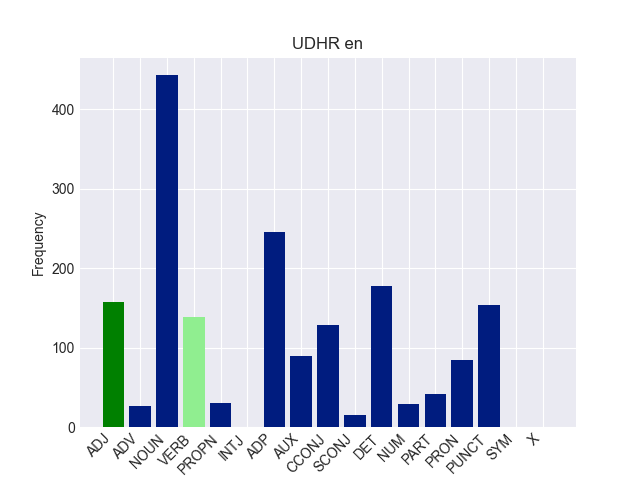 | 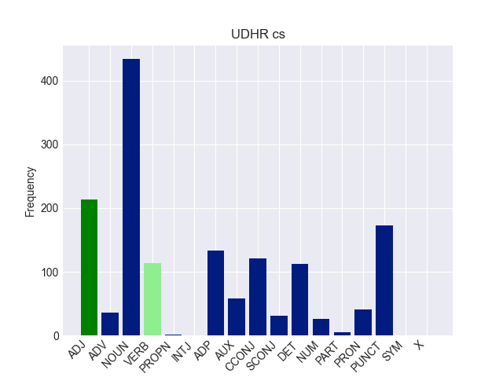 | 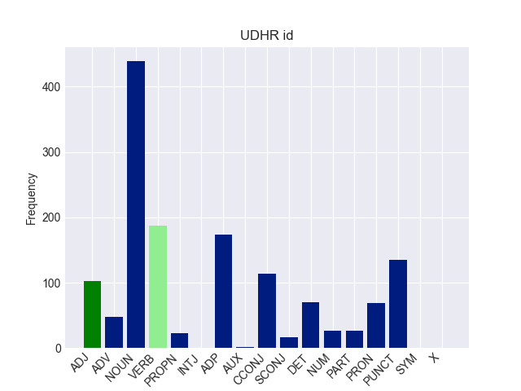 |
| 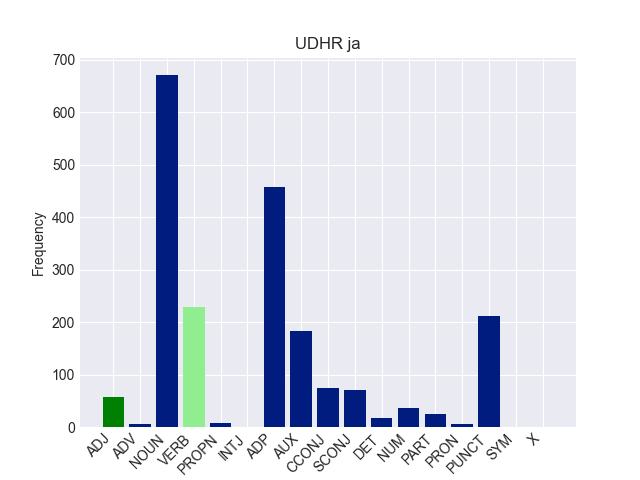 | 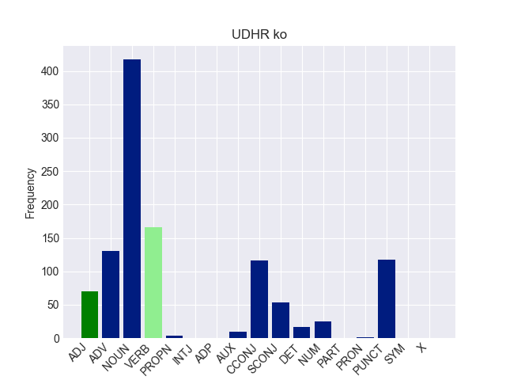 | 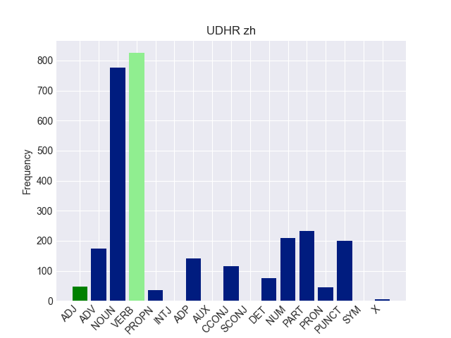 |
| 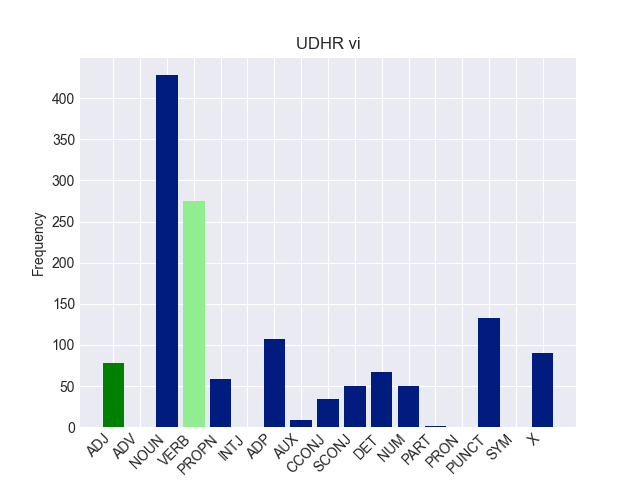 |
| 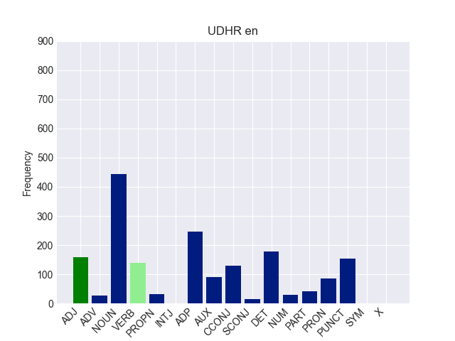 | 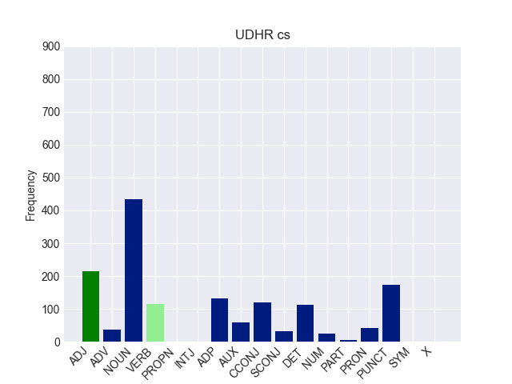 | 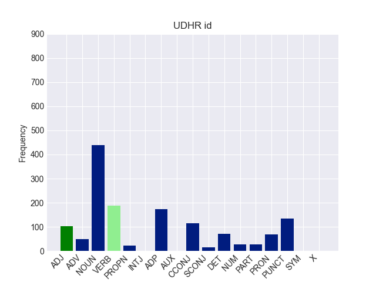 |
| 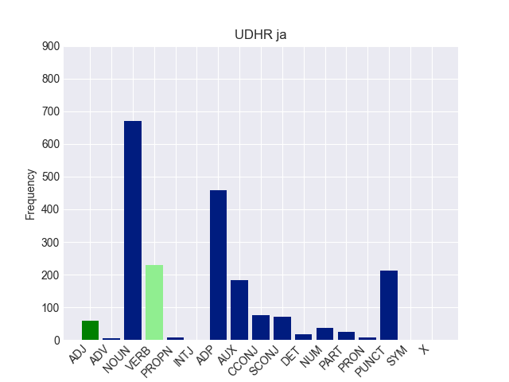 | 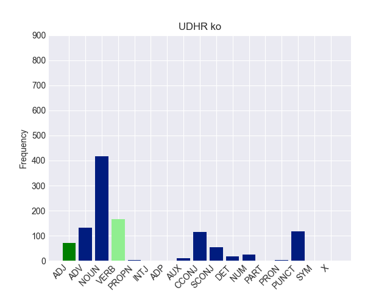 | |
| 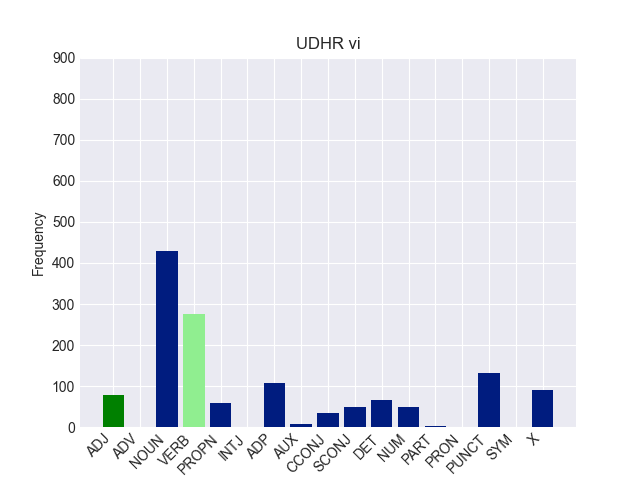 |
❂ If you haved finished everything else, try this
LAC: Language and the Computer Francis Bond.
{kind=link}
{kind=link}